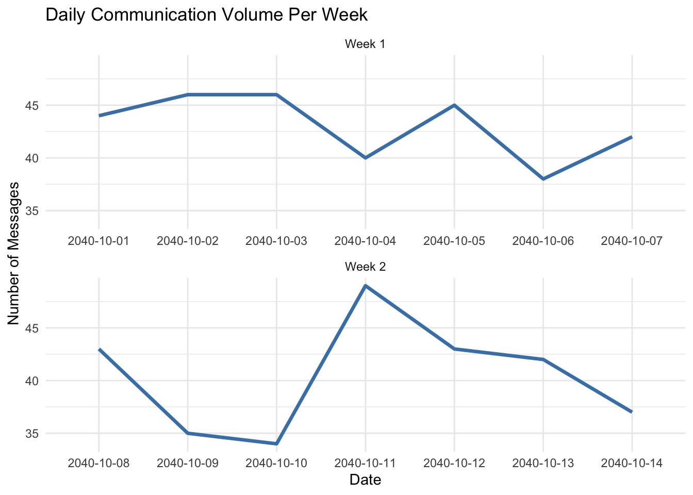
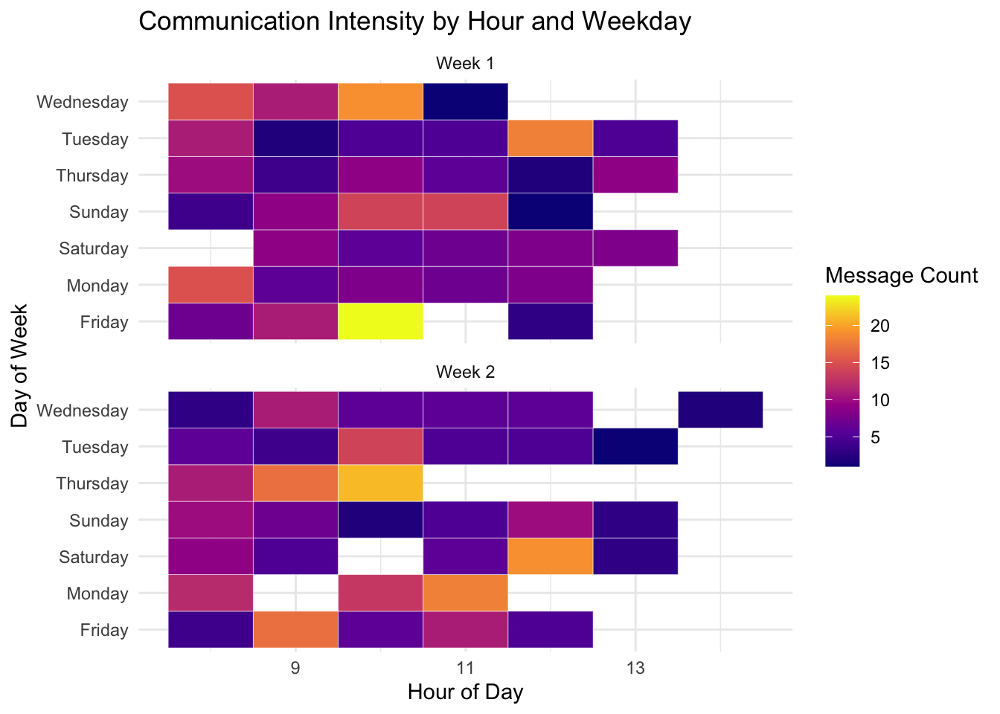
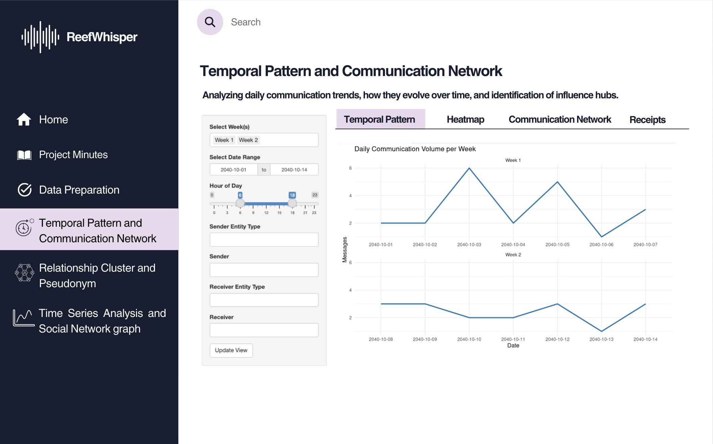
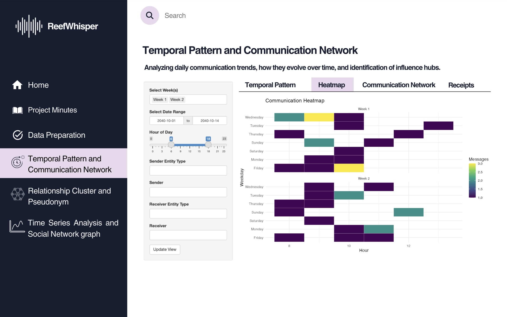
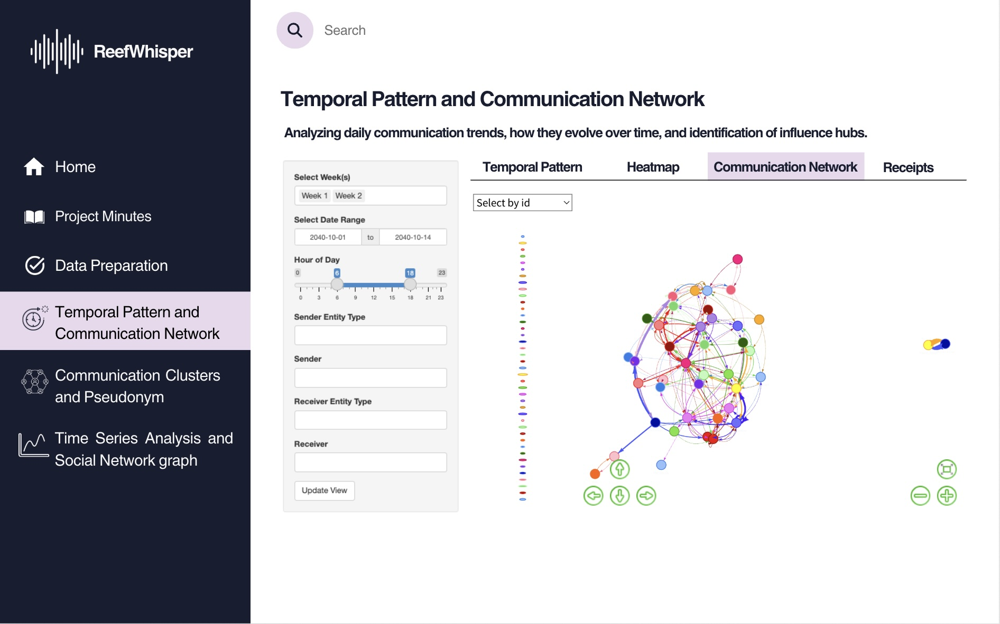
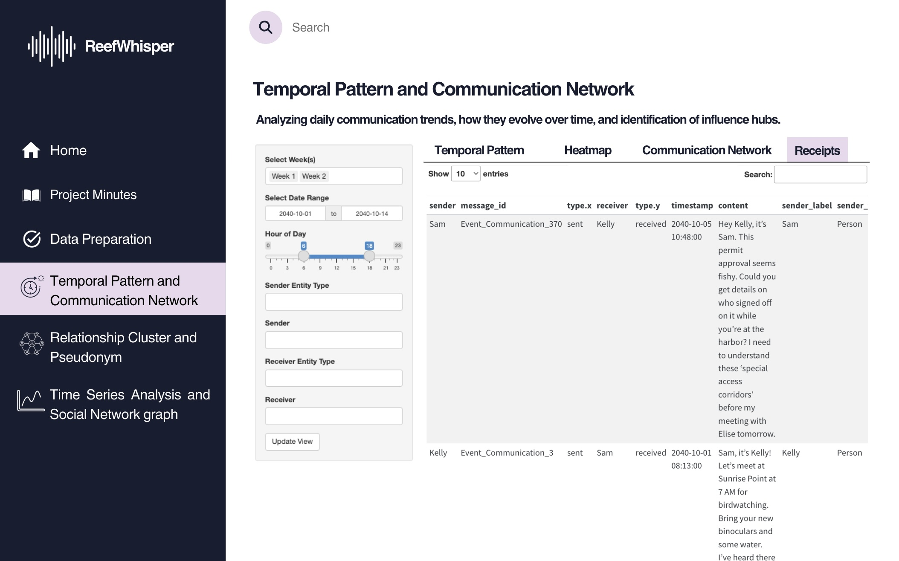

Code
pacman::p_load(tidyverse, tidygraph, ggraph, jsonlite, ggplot2,
SmartEDA, lubridate, ggthemes, readr, readxl, knitr, dplyr, visNetwork)NEW (12/06) - Hands-on Exercise 8 is published!
Vanessa Riadi
June 12, 2025
June 14, 2025
Still in the same storyline with the previous Take Home Exercise 2, Clepper Jessen, an investigative journalist, is uncovering possible corruption in Oceanus linked to the closure of Nemo Reef and the arrival of pop star Sailor Shift. Using intercepted radio communications, a knowledge graph was created to map out interactions between people, vessels, and organizations. This Mini Challenge aims to support Clepper’s investigation through data-driven visual analytics, uncovering patterns, pseudonym usage, social groupings, and suspicious behavior—especially concerning Nadia Conti, a previously implicated figure in illegal fishing.
To support this investigation, a series of three Shiny applications under the ReefWhispers project will be developed to transform this data into actionable insights through visual analytics. Details will be covered in Chapter 3: Storyboard and Chapter 4: UI Design.
This take home exercise 3 objective is to:
The first app, Temporal Pattern and Communication Network, focuses on visual exploration of the intercepted communication metadata. The app will be divided into 4 main section that will be further detailed in Chapter 7.1. It will be focusing on:
Identifying temporal patterns in communications.
Revealing relationships and influence among entities (people, vessels, groups).
The second app, Relationship Clusters and Pseudonyms, will be based on Part 2 - Relationship Cluster and Pseudonym: Hoa’s Take Home Exercise 2. It aims to deepen the analysis of communication networks by identifying patterns of association and hidden identities through an interactive platform for revealing the structure and semantics behind the communication web, and will be further detailed in Chapter 7.2. It will be focusing on:
Uncovering interactions and relationships between vessels and individuals in the network.
Identifying tightly knit groups and inferring the dominant topics of their discussions.
Detecting the use of pseudonyms and linking them back to real identities.
Exploring how visual analytics can help expose common identities disguised under multiple aliases.
The third app, Time Series Analysis and Social Network Graph, will be based on Part 3 - Time Series Analysis and Social Network graph: Summer’s Take Home Exercise 2. It is centered around Clepper’s primary concern—whether Nadia Conti remains involved in illegal activity. It will be focusing on:
Determining whether Nadia Conti is currently engaging in any unlawful behavior based on communication patterns and interactions.
Summarizing her activities over time through temporal and network-based visualizations to support or refute Clepper’s suspicions.
This app combines time series trends and social network dynamics to track Nadia’s role and influence within the broader network, and will be elaborated in Chapter 7.3.
According to uxdesigninstitute “designing beautiful, functional user interfaces is a (sometimes lengthy) process”. And designlab break down the UX design process into easy-to-follow steps. First two is to Define and Research which we have covered in Chapter 2. Third is Analysis & Planning which we have covered in Chapter 3 and 4. In this chapter we will cover the Design stage where we will work on layout and navigation for each of the app.
Break down complexity into modular tabs for Temporal Trends, Heatmap Views, Network Graphs, and Receipts.
Emphasize investigative usability—allowing Clepper to spot patterns, isolate pseudonymous actors, and visually correlate suspicious behaviors.
Use interactive and expressive visuals tailored for social communication analysis.
| Parameters (UI Inputs): | Outputs (UI Outputs): |
|---|---|
|
|
UI Component |
Purpose |
|
titlePanel() |
App’s title | |
sidebarLayout() |
Two-column layout with input controls on the side and output in the main area | |
tabsetPanel() |
Separate tabs for the different visualization | |
selectInput() |
Select an entity or type (e.g., person, vessel), and Filter by Week Label (e.g., Week 1/2) | | | |
textInput() or selectizeInput() |
Allows one or more selection sender/receiver | |
checkboxGroupInput() |
Select multiple weeks or types | |
dateRangeInput() |
Filter by date range | |
sliderInput() |
Filter by hour of day (0–23) | |
plotOutput() |
Static ggplot visualizations (content to be defined under Server \<- function segment) | |
|
dataTableOutput() |
Render data table (content to be defined under Server \<- function segment) | |
|
visNetworkOutput() |
Interactive network graph (content to be defined under Server \<- function segment) | |
|
actionButton() |
Apply filters | |
As we will be adapting our Take Home Exercise 2 graphs to Shiny Application, we need to ensure that we have all the necessary R packages needed for this conversion such as:
Most preparation have been done in Take Home Exercise 2.
In this section we will prepare and test the specific R codes can be run and return the correct output as expected.
First we load the requred R packages
Next we load the data in
| sender | message_id | type.x | receiver | type.y | timestamp | content | sender_label | sender_type | receiver_label | receiver_type | weekday | hour | week | week_label | date |
|---|---|---|---|---|---|---|---|---|---|---|---|---|---|---|---|
| Sam | Event_Communication_370 | sent | Kelly | received | 2040-10-05T10:48:00Z | Hey Kelly, it’s Sam. This permit approval seems fishy. Could you get details on who signed off on it while you’re at the harbor? I need to understand these ‘special access corridors’ before my meeting with Elise tomorrow. | Sam | Person | Kelly | Person | Friday | 10 | 40 | Week 1 | 2040-10-05 |
| Kelly | Event_Communication_3 | sent | Sam | received | 2040-10-01T08:13:00Z | Sam, it’s Kelly! Let’s meet at Sunrise Point at 7 AM for birdwatching. Bring your new binoculars and some water. I’ve heard there might be some rare shorebirds passing through this weekend. Can’t wait! | Kelly | Person | Sam | Person | Monday | 8 | 40 | Week 1 | 2040-10-01 |
| Kelly | Event_Communication_443 | sent | Sam | received | 2040-10-07T08:11:00Z | Hey Sam, it’s Kelly! Got some photos of those crates - definitely marked ‘fragile’ and ‘handle with care.’ Neptune’s crew is being super secretive. They’re using special loading equipment I’ve never seen before. See you at 7 for birdwatching! | Kelly | Person | Sam | Person | Sunday | 8 | 40 | Week 1 | 2040-10-07 |
comm_full %>%
count(week_label, date) %>%
ggplot(aes(x = date, y = n, group = week_label)) +
geom_line(color = "steelblue", size = 1.2) +
facet_wrap(~ week_label, scales = "free_x", ncol = 1, labeller = label_value) +
labs(
title = "Daily Communication Volume Per Week",
x = "Date", y = "Number of Messages"
) +
theme_minimal()
comm_hourly_weekly <- comm_full %>%
count(week_label, weekday, hour)
ggplot(comm_hourly_weekly, aes(x = hour, y = weekday, fill = n)) +
geom_tile(color = "white") +
scale_fill_viridis_c(option = "plasma", name = "Message Count") +
labs(title = "Communication Intensity by Hour and Weekday",
x = "Hour of Day", y = "Day of Week") +
facet_wrap(~ week_label, ncol = 1) +
theme_minimal()
# Create edge list
graph_edges <- comm_full %>%
count(sender_label, receiver_label) %>%
filter(!is.na(sender_label), !is.na(receiver_label)) %>%
rename(from = sender_label, to = receiver_label, value = n)
# Create node list from edges
graph_nodes <- tibble(name = unique(c(graph_edges$from, graph_edges$to))) %>%
mutate(id = name, label = name, group = name)
# visNetwork expects numeric node IDs, but we can use labels for both
visNetwork(nodes = graph_nodes, edges = graph_edges) %>%
visEdges(arrows = "to") %>%
visOptions(highlightNearest = TRUE, nodesIdSelection = TRUE) %>%
visLayout(randomSeed = 123) %>%
visPhysics(stabilization = TRUE) %>%
visInteraction(navigationButtons = TRUE) %>%
visLegend()Purpose: Reveal day-to-day communication rhythms.
Design Elements:
Line Graph: Daily message volumes per week.
Interactive Controls: Week selection, date range slider, hour-of-day filter.
Dropdowns: Filter by sender/receiver entity type (e.g., person, vessel, organization).
This helps Clepper pinpoint temporal spikes, such as bursts of chatter before critical events (e.g., Sailor Shift’s arrival or Nemo Reef closure).

Purpose: Explore patterns by time-of-day and communication density.
Design Elements:
Heatmap Matrix: Color-coded intensity based on message count by hour and date.
Color Scale: Darker hues represent higher volume.
Effective for isolating habitual communicators or unusual off-hour messages (potential signs of covert coordination).

Purpose: Visualize the social graph of communication.
Design Elements:
Force-Directed Graph: Nodes for people/vessels/organizations, edges for interactions.
Node Filtering: Allows selection by ID to isolate individuals.
This is key for identifying influence hubs, peripheral actors, and communication silos—crucial for mapping Nadia Conti’s hidden relationships.

This tab allow users to read the communication messages (or as investigators we can call them receipts).
Purpose: Provide a full-text view of communication logs.
Design Elements:
Data Table: Shows message sender, receiver, timestamp, type, and raw message content.
Pseudonym Tracking: Enables Clepper to connect aliases across threads.
Useful for identifying suspicious message contents and linking disguised personas (e.g., Nadia Conti under a pseudonym) to known actors.

Scroll down and click “Update View” to load the visualization!
Interactive prototype currently only available for App 1.